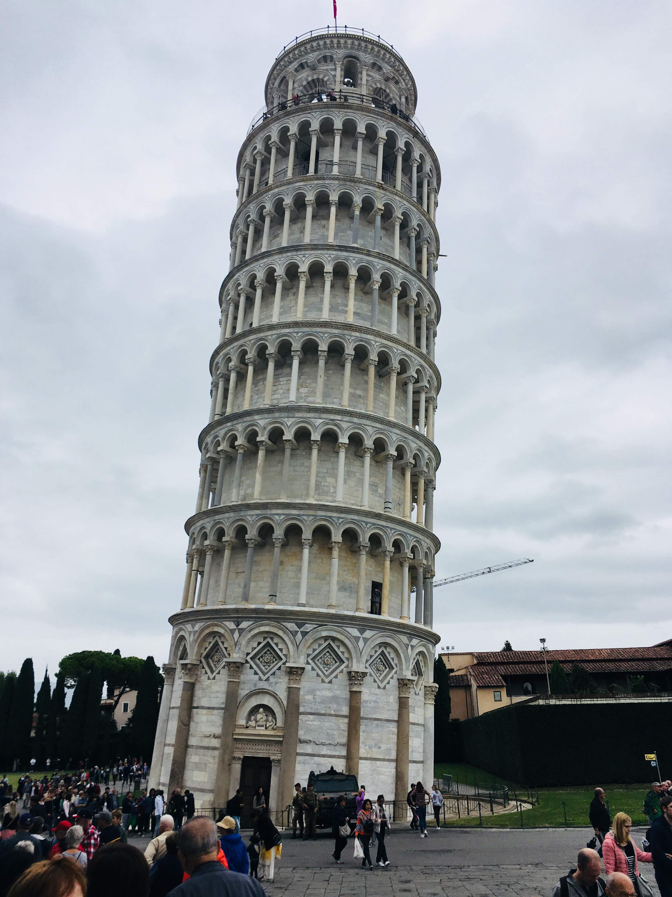
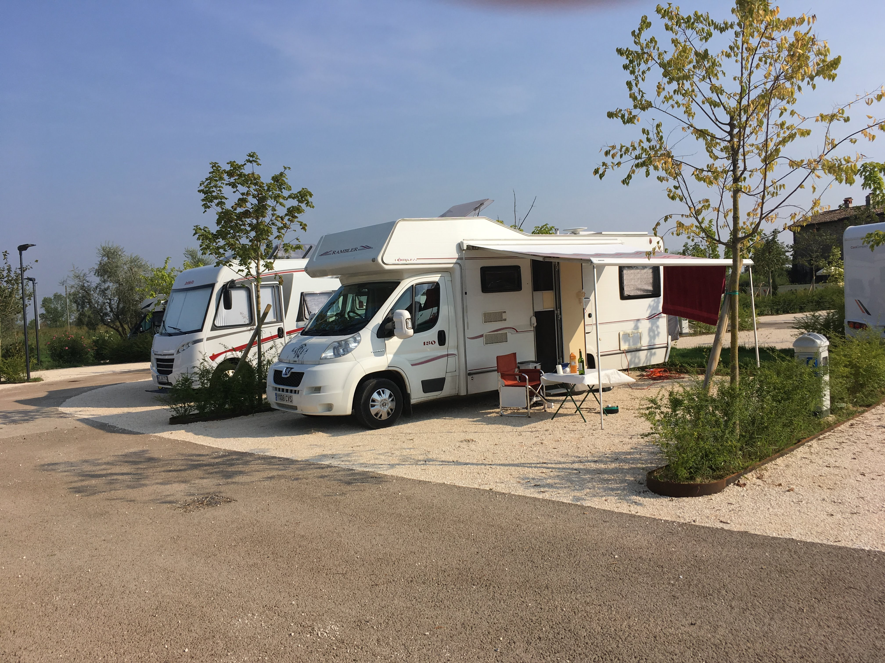
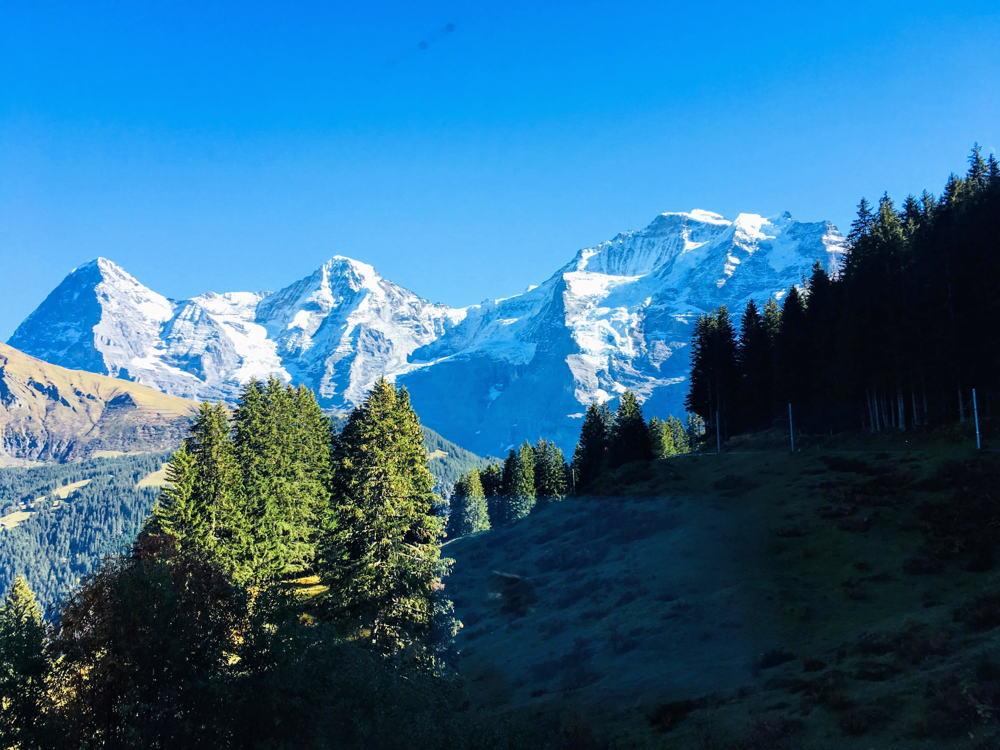
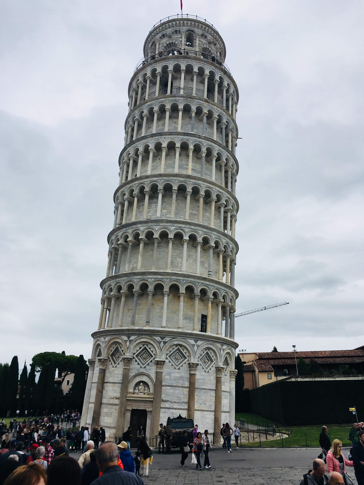
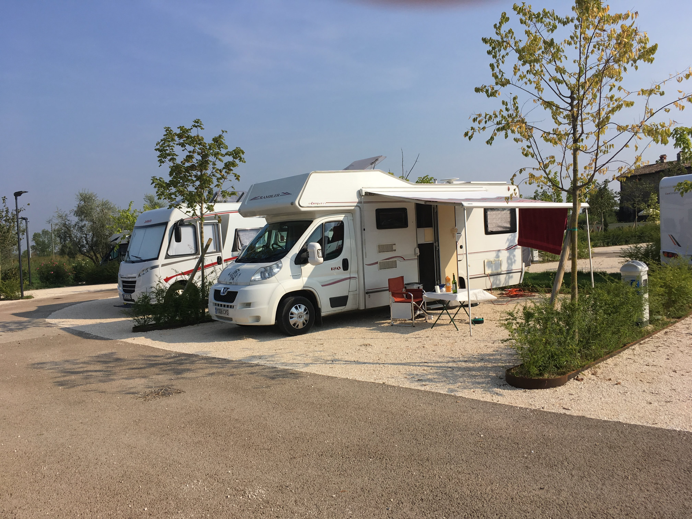
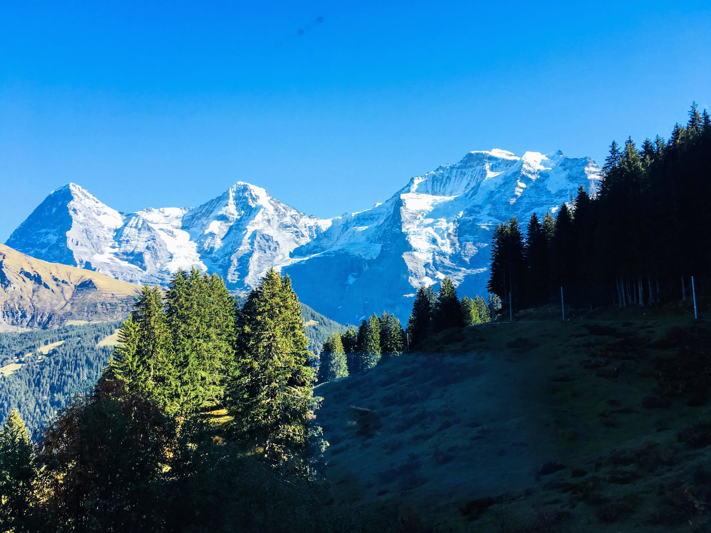
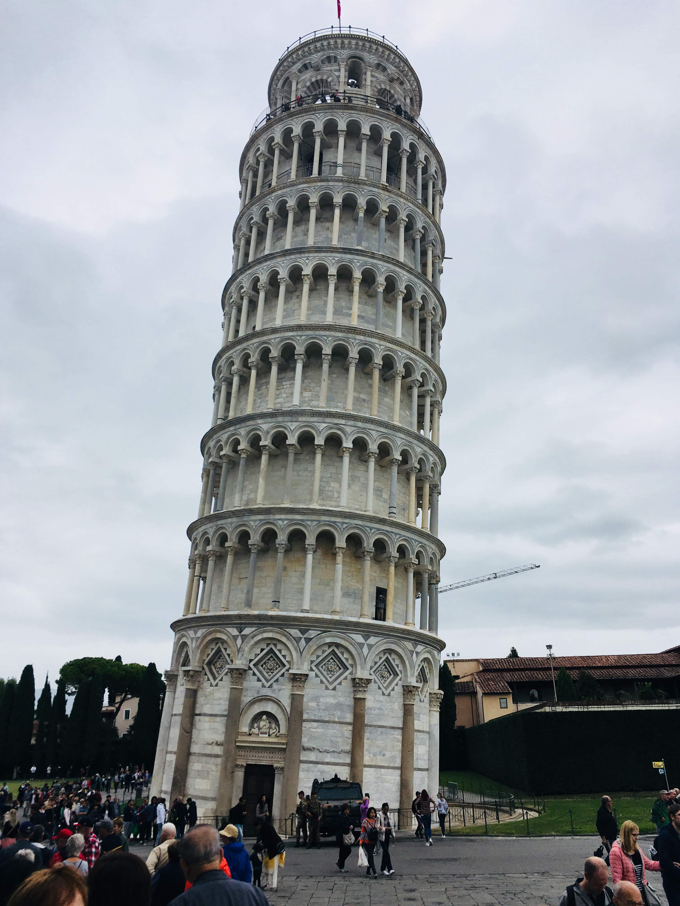
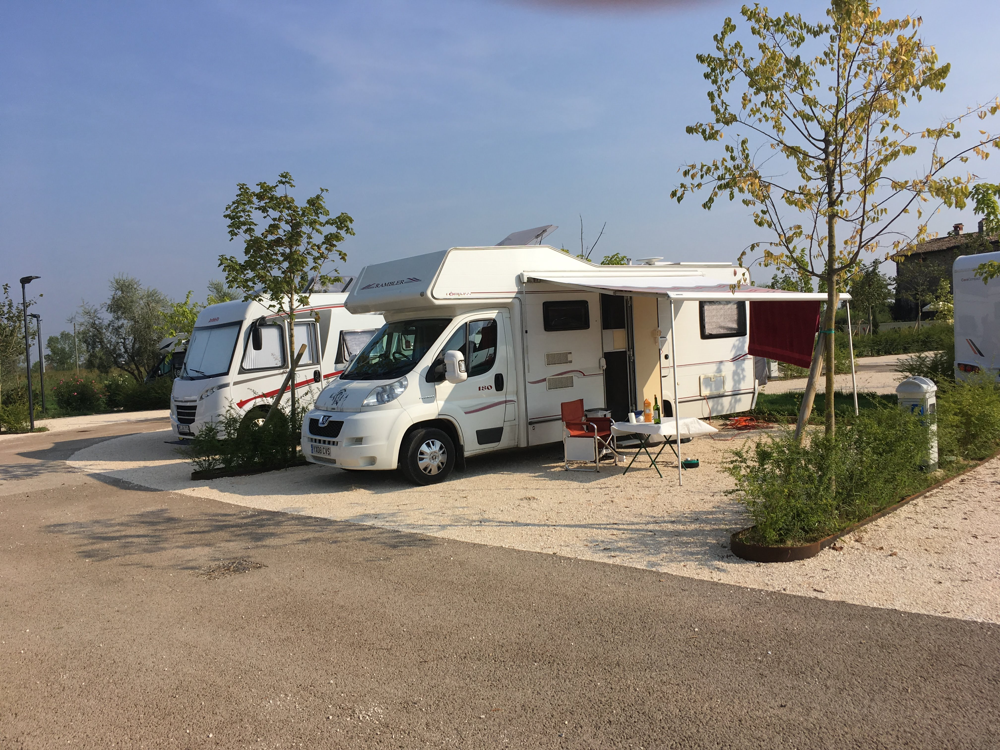
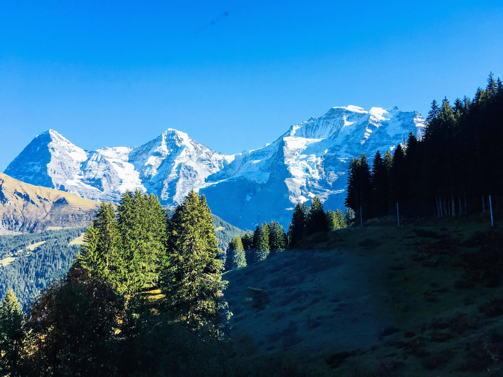
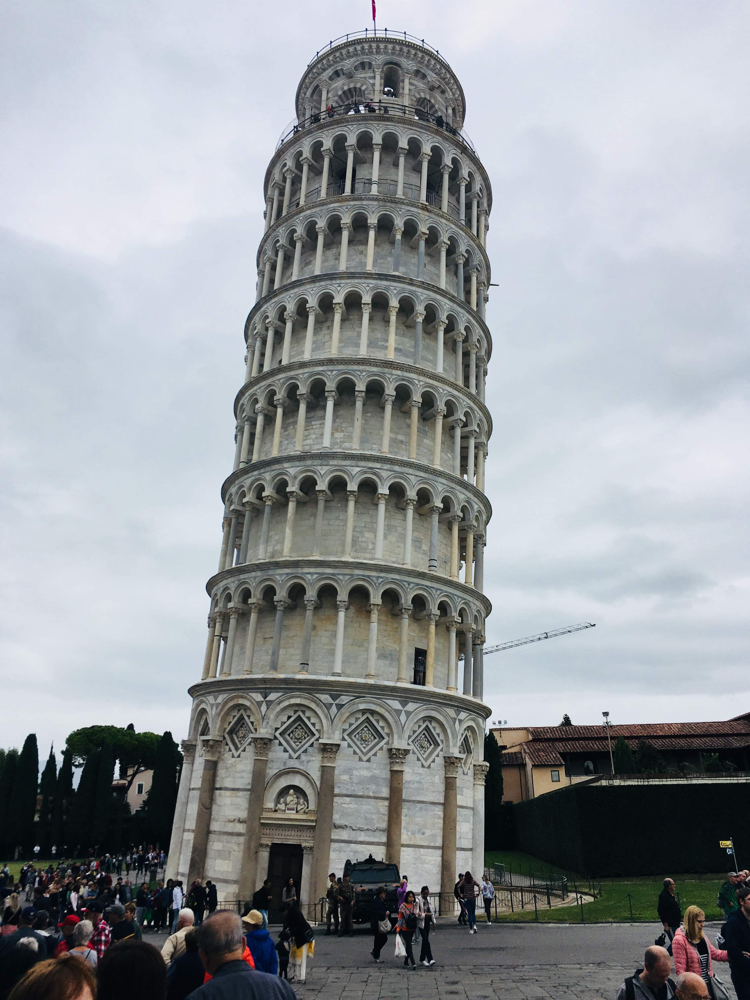
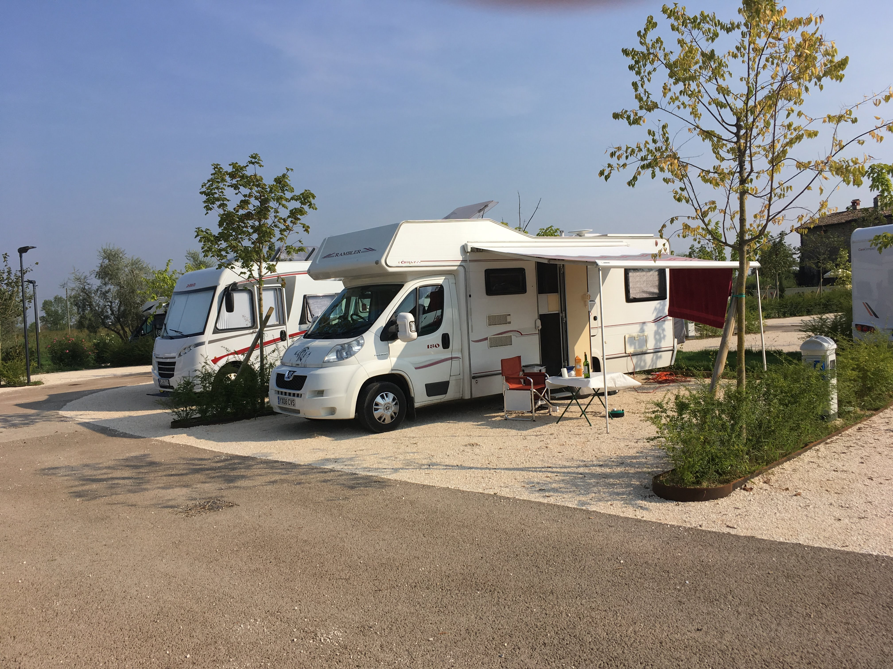
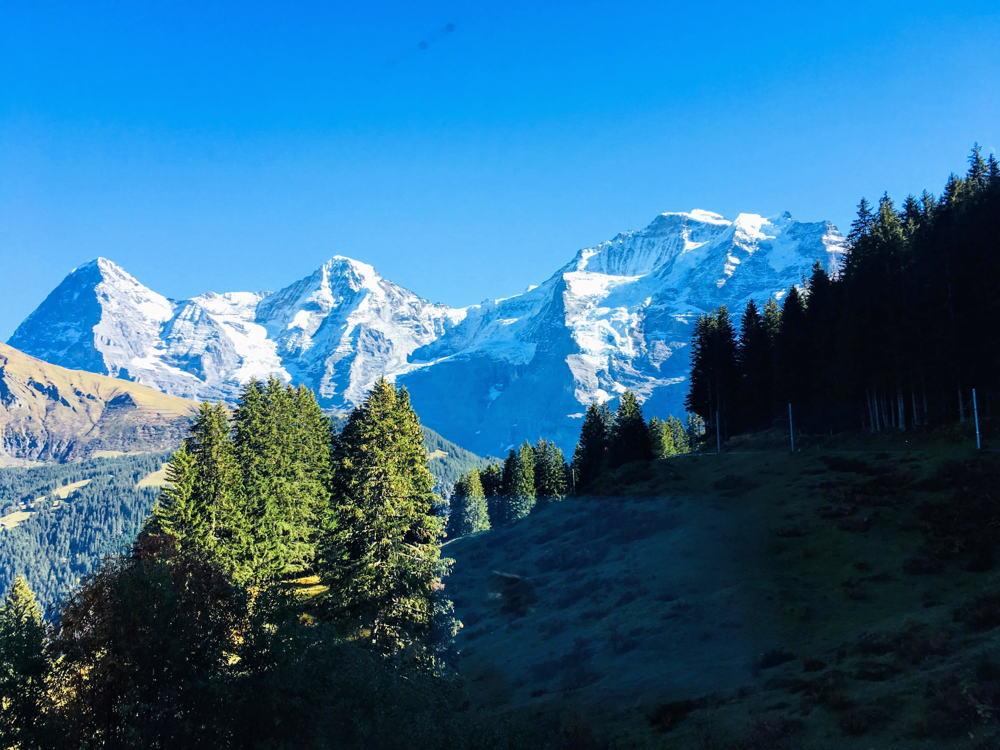
"Hello and welcome to my website! Follow me around the most beautiful countries in Europe. Simply select a country at the top of the screen to see a variety of images, videos, and information about the places visited and my experiences...Bon Voyage!"

How thorough you are when it comes to planning your motorhome trip is completely up to you. Personally I took the option of buying an Aires Guide for both France and Italy. On estimate I drove a total of 6000km, starting at Portsmouth and arriving back in Hull. The beauty of Europe is it's accessibility for motorhomes. Aires stops are ok for a night and have water, emptying points, even electric hook-ups (Be careful though, The guide may say electric hook-up but there's usually only one point... first come firsst serve!). Alternatively you can spend a few days on a campsite. I would recommend purchasing an ASCI guide and camping card. You can simply select a site you wish to stay at, book over the phone or via the app and away you go!